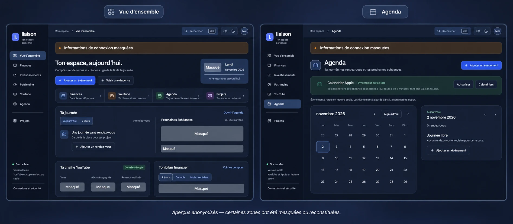

Une vue d’ensemble
Retrouver les projets et les différents espaces depuis un accueil commun, avec une recherche globale.
Application locale sur macOS
Faire le lien entre les outils du quotidien.
Une interface personnelle locale pour retrouver agenda, projets, suivi financier et activité YouTube dans un même espace.
L’interface en pratique

L’agenda, les projets, les comptes et l’activité de création de contenu vivent dans des outils différents. Liaison est né d’un besoin personnel : avoir une entrée commune pour consulter ces informations.
J’ai conçu une interface modulaire et relié ses vues à des services et des données locales. Le projet associe une interface web légère à un serveur Python et à des ponts natifs sur macOS.
Retrouver les projets et les différents espaces depuis un accueil commun, avec une recherche globale.
Consulter les calendriers Apple sélectionnés et les rapports YouTube autorisés, en lecture seule.
Réunir le suivi des comptes, de l’épargne et des investissements. Les sources et valeurs manquantes restent identifiables.
Disposer de copies locales, d’exports chiffrés et d’une prévisualisation avant une restauration.
Le serveur fonctionne sur le Mac. Le portfolio présente le projet, sans exposer l’application personnelle ni ses données.
Les usages sont regroupés par module, pour ajouter des fonctions au fil des besoins sans perdre le point d’entrée commun.
Connexions, synchronisations et conflits sont signalés pour comprendre ce qui est disponible et ce qui demande une action.
Réunir plusieurs sources ne suffit pas : il faut préciser leur date, leur périmètre et leur état. Un dernier solde connu ne remplace pas une synchronisation récente, et la date d’un rapport YouTube ne correspond pas toujours au dernier jour disponible.
Une autorisation peut expirer ou un service devenir indisponible. L’interface doit expliquer ces situations tout en laissant consulter les informations déjà enregistrées.
Le rapport du 2 novembre 2026 relève 345 tests réussis : 169 côté JavaScript et 176 côté Python. Ces contrôles portent sur les calculs, validations et erreurs ; ils ne constituent pas un audit de sécurité exhaustif.
La priorité est de rendre les données plus faciles à interpréter : rapprocher les dates des montants, clarifier les états de connexion et alléger les avertissements répétés.
La conservation des données reste aussi un axe de travail : compléter les sauvegardes locales par une copie chiffrée hors du Mac et vérifier la restauration sur une copie isolée.
Une façon de transformer un besoin d’organisation en un outil personnel qui évolue avec mes usages.
Parlons de ce projet